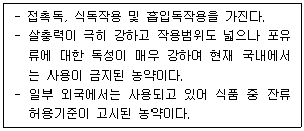
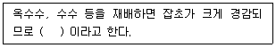
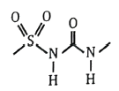
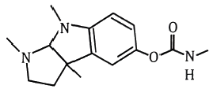
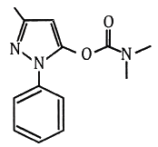
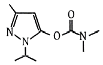
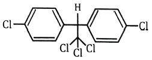
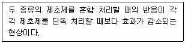

식물보호기사 (2022-03-05 기출문제)
1과목: 식물병리학
1. 소나무 잎마름병의 병징에 대한 설명으로 옳은 것은?
- 봄에 묵은 잎이 적갈색으로 변하면서 대량으로 떨어진다.
- 잎에 바늘구멍 크기의 적갈색 반점이 나타나고 동심원으로 커진다.
- 수관 하부에 있는 잎에서 담갈색 반점이 생기면서 발생하여 상부로 점차 진전한다.
- 잎에 띠 모양의 황색 반점이 생기다가 갈색으로 변하면서 반점들은 합쳐진다.
(정답률: 59%)

2. 다음 중 균류의 영양기관은?
- 왁스층
- 포자낭
- 분생포자
- 균사체
(정답률: 74%)
3. 식물병 발생에 필요한 3대 요인에 속하지 않는 것은?
- 기주
- 병원체
- 매개충
- 환경요인
(정답률: 74%)
4. 다음 중 사과 겹무늬썩음병의 병원균은?
- 곰팡이
- 바이러스
- 세균
- 파이토플라스마
(정답률: 58%)
5. 다음 중 오이류 덩굴쪼김병의 방제 방법으로 가장 효과가 낮은 것은?
- 종자를 소독한다.
- 저항성 품종을 재배한다.
- 잎 표면에 약제를 집중적으로 살포한다.
- 호박이나 박을 대목으로 접목하여 재배한다.
(정답률: 69%)
6. 병원균이 불완전세대로 Pyricularia grisea(P. oryzae)인 식물병은?
- 보리 줄기녹병
- 벼 도열병
- 감귤 잿빛곰팡이병
- 오이 흰가루병
(정답률: 78%)
7. 자주날개무늬병이 속하는 진균류는?
- 담자균
- 병꼴균
- 난균
- 접합균
(정답률: 77%)
8. 다음 중 유주자낭을 형성하는 병원균은?
- 오이 흰가루병균
- 딸기 시들음병균
- 고추 역병균
- 토마토 잿빛곰팡이병균
(정답률: 53%)
9. 배나무 붉은별무늬병에 대한 설명으로 옳지 않은 것은?
- 잎에 병무늬가 많이 형성되면 조기 낙엽의 원인이 된다.
- 주요 발병 부위는 잎, 열매, 가지이다.
- 병원균이 기주교대를 하지 않는다.
- 병원균은 순활물기생균이다.
(정답률: 79%)
10. 자낭균이며 표징이 잘 나타나지 않는 것은?
- 보리 겉깜부기병
- 벼 잎집무늬마름병
- 밀 줄기녹병
- 벼 깨씨무늬병
(정답률: 50%)
11. 다음 중 매개충에 의해 경란 전염하는 바이러스는?
- 보리 줄무늬모자이크병
- 감자 X 바이러스병
- 담배 모자이크병
- 벼 줄무늬잎마름병
(정답률: 60%)
12. 감자 역병에 대한 설명으로 옳지 않은 것은?
- 아일랜드 대기근의 원인이다.
- 병원균은 자웅동형성이다.
- 역사적으로 1845년경에 대발생했다.
- 무병 씨감자를 사용하여 방제할 수 있다.
(정답률: 76%)
13. 식물병원균에 대한 길항균으로 많이 사용되는 것은?
- Streptomyces scabies
- Trichoderma harzianum
- Penicillium expansum
- Rhizoctonia solani
(정답률: 64%)
14. 다음 중 크기가 가장 작은 것은?
- 세균
- 곰팡이
- 바이러스
- 바이로이드
(정답률: 84%)
15. 푸사리움균(Fusarium)에서 알려졌으며, 하나의 세포 내에 유전적으로 다른 2개 이상의 반수체핵이 존재하는 현상은?
- 이질반핵현상
- 이질다핵현상
- 동질반핵현상
- 동질다핵현상
(정답률: 71%)
16. 감염된 식물체 중 가축이 먹으면 가장 해로운 병은?
- 담배 모자이크병
- 보리 붉은곰팡이병
- 콩 자주무늬병
- 벼 도열병
(정답률: 81%)
17. 밤나무 줄기마름병의 병반 부위의 전형적인 병징은?
- 비대
- 천공
- 위조
- 궤양
(정답률: 60%)
18. 노지에서 고추 역병이 가장 잘 발병하는 요인은?
- 사질토양
- 고온
- 건조
- 침수
(정답률: 76%)
19. 식물병 진단방법 중 형광항체법을 이용하는 것은?
- 혈청학적 진단
- 생물학적 진단
- 물리적 진단
- 핵산분석에 의한 진단
(정답률: 76%)
20. 다음 중 진딧물에 의해 바이러스가 전염되어 발생하는 병은?
- 콩 불마름병
- 벼 도열병
- 배추 모자이크병
- 대추나무 빗자루병
(정답률: 67%)
2과목: 농림해충학
21. 곤충의 생식 기관이 아닌 것은?
- 심문
- 저장낭
- 부속샘
- 송이체
(정답률: 65%)
22. 거미와 비교한 곤충의 특징으로 가장 거리가 먼 것은?
- 겹눈과 홑눈이 있다.
- 변태를 하는 종이 있다.
- 4쌍의 다리를 가지고 있다.
- 몸이 머리, 가슴, 배 3부분으로 되어 있다.
(정답률: 72%)
23. 사과굴나방에 대한 설명으로 옳지 않은 것은?
- 알로 잎 속에서 월동한다.
- 피해 입은 잎이 뒷면으로 말린다.
- 잎 뒷면에 성충이 우화하여 나간 구멍이 있다.
- 사과나무, 배나무, 복숭아나무의 잎을 가해한다.
(정답률: 68%)
24. 담배나방에 대한 설명으로 틀린 것은?
- 고추의 주요 해충 중 하나이다.
- 땅속에서 번데기로 월동한다.
- 1년에 1회 발생한다.
- 담배에 피해를 준다.
(정답률: 54%)
25. 벼의 해충 중 흡즙에 의한 직접적인 피해 외에도 줄무늬잎마름병과 검은줄오갈병의 바이러스병을 매개하여 간접적인 피해를 주는 해충은?
- 이화명나방
- 혹명나방
- 벼멸구
- 애멸구
(정답률: 70%)
26. 점박이응애에 대한 설명으로 옳지 않은 것은?
- 알은 투명하다.
- 기주범위가 넓다.
- 부화직후의 약충은 다리가 4쌍이다.
- 여름형과 월동형 성충의 몸 색깔이 다르다.
(정답률: 64%)
27. 다음 중 가해하는 기주가 가장 다양한 해충은?
- 벼멸구
- 솔잎혹파리
- 사과혹진딧물
- 미국흰불나방
(정답률: 71%)
28. 외부의 자극에 반응하여 곤충이 행동하는 유형이 아닌 것은?
- 주굴성
- 주광성
- 주화성
- 주수성
(정답률: 52%)
29. 복관(collophore)을 갖고 있는 곤충은?
- 좀
- 낫발이
- 진딧물
- 톡톡이
(정답률: 63%)
30. 식도하신경절에 의해 운동신경과 감각신경의 지배를 받지 않는 기관은?
- 큰턱
- 작은턱
- 더듬이
- 아랫입술
(정답률: 69%)
31. 곤충의 생리에 대한 설명으로 가장 거리가 먼 것은?
- 기관 호흡을 한다.
- 연속되는 탈피를 통해 몸을 키운다.
- 완전변태류의 경우 번데기 과정을 거친다.
- 혈액 속 헤모글로빈에 의해 산소를 공급받는다.
(정답률: 74%)
32. 간모를 통해 단위생식을 하는 것은?
- 배추순나방
- 점박이응애
- 가루깍지벌레
- 복숭아혹진딧물
(정답률: 59%)
33. 곤충의 전형적인 더듬이의 주요부분 중 존스턴기관을 가지고 있는 것은?
- 자루마디(scape)
- 팔굽마디(pedicel)
- 채찍마디(flagellum)
- 관절점
(정답률: 67%)
34. 마늘에 피해를 주는 고자리파리의 방제방법으로 가장 효과가 적은 것은?
- 천적인 고자리혹벌을 이용한다.
- 미숙 유기질 비료를 많이 시용한다.
- 파종 또는 이식 전에 토양살충제를 살포한다.
- 연작지에서 발생과 피해가 심하므로 윤작을 실시한다.
(정답률: 65%)
35. 외시류 곤충의 겹눈을 구성하는 낱눈의 수의 변화에 대한 설명으로 옳은 것은?
- 약충 발육기간 중에만 증가한다.
- 변태기에만 증가한다.
- 탈피기와 변태기에 모두 증가한다.
- 아무런 수의 변화가 없다.
(정답률: 58%)
36. 파리의 날개는 몸의 어느 부위에 부착되어 있는가?
- 등판
- 앞가슴
- 가운데가슴
- 뒷가슴
(정답률: 68%)
37. 곤충의 배설계에 대한 설명으로 옳지 않은 것은?
- 말피기관의 끝은 막혀 있다.
- 지상곤충은 주로 질소대사산물을 암모니아 형태로 배설한다.
- 말피기관은 중장과 후장의 접속부분에서 후장에 연결되어 있다.
- 말피기관 밑부와 직장은 물과 무기이온을 재흡수하여 조직 내의 삼투압을 조절한다.
(정답률: 55%)
38. 아성충 단계가 있고, 유충은 기관아가미로 호흡하는 곤충류는?
- 모기
- 파리
- 총채벌레
- 하루살이
(정답률: 59%)
39. 다음 설명에 해당하는 살충제는?

- 니코틴
- 비산석회
- 파라티온
- 피레스린
(정답률: 73%)
40. 근육 부착을 위한 머리내 골격 구조를 무엇이라 하는가?
- 봉합선(suture)
- 합체절(tagma)
- 막상골(tentorium)
- 두개(cranium)
(정답률: 62%)
3과목: 재배학원론
41. 다음 중 굴광현상에 가장 유효한 광은?
- 청색광
- 녹색광
- 자색광
- 자외선
(정답률: 67%)
42. 다음 중 작물의 주요온도에서 생육이 가능한 범위 내 최고온도가 가장 높은 것은?
- 사탕무
- 옥수수
- 보리
- 밀
(정답률: 65%)
43. 다음 중 작물의 복토깊이가 가장 깊은 것은?
- 양파
- 생강
- 배추
- 시금치
(정답률: 69%)
44. 작물 체내에서 전류이동이 잘 이루어져 결핍될 경우 결핍증상이 오래된 잎에 먼저 나타나는 다량원소는?
- 아연
- 철
- 붕소
- 질소
(정답률: 55%)
45. 재배포장에서 파종된 종자의 발아상태를 조사할 때 “발아한 것이 처음 나타난 날”을 무엇이라 하는가?
- 발아전
- 발아의 양부
- 발아기
- 발아시
(정답률: 72%)
46. 맥류의 도복을 적게 하는 방법으로 옳지 않은 것은?
- 칼륨 비료의 시용
- 단간성 품종의 선택
- 파종량의 증대
- 석회 사용
(정답률: 57%)
47. 다음 중 직근류에 해당하는 것으로만 나열된 것은?
- 감자, 보리
- 당근, 우엉
- 토란, 마
- 생강, 베치
(정답률: 67%)
48. 벼에서 염해가 우려되는 최소 농도는?
- 0.04% NaCl
- 0.1% NaCl
- 0.7% NaCl
- 0.9% NaCl
(정답률: 70%)
49. ( ) 에 알맞은 내용은?

- 동반작물
- 휴한작물
- 중경작물
- 환금작물
(정답률: 64%)
50. 다음 중 요수량이 가장 적은 작물은?
- 호박
- 완두
- 옥수수
- 클로버
(정답률: 57%)
51. 작물의 내염성 정도가 강한 것으로만 나열된 것은?
- 완도, 레몬
- 셀러리, 고구마
- 양배추, 순무
- 살구, 복숭아
(정답률: 63%)
52. 군락의 수광태세가 좋아지고 밀식적응성이 높은 콩의 초형으로 틀린 것은?
- 잎이 크고 두껍다.
- 잎자루가 짧고 일어선다.
- 꼬투리가 원줄기에 많이 달린다.
- 가지를 적게 치고 가지가 짧다.
(정답률: 66%)
53. 작물의 내동성에 대한 설명으로 가장 옳은 것은?
- 세포액의 삼투압이 높으면 내동성이 증대한다.
- 원형질의 친수성콜로이드가 적으면 내동성이 커진다.
- 전분함량이 많으면 내동성이 커진다.
- 조직즙의 광에 대한 굴절률이 커지면 내동성이 저하된다.
(정답률: 60%)
54. 다음 중 휴작기간이 가장 긴 작물은?
- 미나리
- 당근
- 아마
- 토마토
(정답률: 64%)
55. 다음 중 작물의 교잡률이 0.0~0.15%에 해당하는 것은?
- 아마
- 가지
- 수수
- 보리
(정답률: 53%)
56. 다음 중 작물재배 시 부족하면 수정·결실이 나빠지는 미량원소는?
- P
- S
- B
- Ca
(정답률: 56%)
57. 질산 환원 효소의 구성 성분으로 콩과작물의 질소고정에 필요한 무기성분은?
- 철
- 염소
- 몰리브덴
- 규소
(정답률: 63%)
58. 화곡류에서 규질화를 이루어 병에 대한 저항성을 높이고, 잎을 꼿꼿하게 세워 수광태세를 좋게 하는 것은?
- 철
- 칼륨
- 니켈
- 규산
(정답률: 66%)
59. 국화의 주년재배와 가장 관계가 있는 것은?
- 광처리
- 온도처리
- 영양처리
- 수분처리
(정답률: 64%)
60. 재배의 기원지가 중앙아시아에 해당하는 것은?
- 양배추
- 대추
- 양파
- 고추
(정답률: 60%)
4과목: 농약학
61. 유제의 유화성, 수화제의 현수성을 검정하는데 사용하는 물의 경도는?
- 1.0
- 3.0
- 5.0
- 7.0
(정답률: 38%)
62. 농약관리법상 새로운 농약을 제조업자가 국내에서 제조하여 국내에서 판매하기 위해 등록한 품목등록의 유효기간은?
- 3년
- 5년
- 10년
- 15년
(정답률: 48%)
63. 교차저항성(Cross resistance)에 대한 설명으로 가장 적절한 것은?
- 어떤 약제에 의해 저항성이 생긴 곤충이 다른 약제에 저항성을 보이는 것
- 동일 곤충에 어떤 약제를 반복 살포함으로써 생기는 저항성
- 동일 곤충에 두 가지 약제를 교대로 처리함으로써 생기는 저항성
- 어떤 약제에 대한 저항성을 가진 곤충이 다음 세대에 그 특성을 유전시키는 것
(정답률: 72%)
64. 환경 친화적인 제형과 가장 거리가 먼 것은?
- 미탁제(Micro Emulsion; ME)
- 수면전개제(Spreading Oil; SO)
- 유제(Emulsifiable Concentrate; EC)
- 유탁제(Emulsion, oil in Water; EW)
(정답률: 57%)
65. 강력한 접촉형 비선택성 제초제로서 비농경지의 논두렁 및 과수원에서 작물을 파종하기 전 잡초를 방제하는데 이용되었으나, 독성 등으로 인해 품목등록이 제한된 원제는?
- Paraquat dichloride
- Mefenacet
- Alachlor
- Propanil
(정답률: 58%)
66. 병의 예방을 목적으로 병원균이 식물체에 침투하는 것을 방지하기 위해 사용되며 약효시간이 긴 특징을 갖고 있는 약제는?
- 보호살균제
- 직접살균제
- 종자소독제
- 토양살균제
(정답률: 68%)
67. Isoprothiolane 유제(50%, 비중 1.⑤) 100mL로 0.⑤% 살포액을 조제하는데 필요한 물의 양(L)은?
- 20
- 25
- 1⑤
- 204
(정답률: 63%)
68. DDVP 유제 50%를 500배로 희석하여 면적 10a당 72L를 살포하고자 할 때 소요약량(mL)은?
- 72
- 144
- 288
- 576
(정답률: 61%)
69. 식물생장조절제(Plant Growth Regulator; PGR)에 대한 설명으로 틀린 것은?
- 식물의 다양한 생리현상에 영향을 미친다.
- 농작물의 생육을 촉진하거나 억제시킨다.
- 지베렐린산은 딸기, 토마토의 숙기억제에 관여한다.
- 아브시스산은 목화의 유과의 낙과 촉진에 관여한다.
(정답률: 65%)
70. 분제의 제제에 있어 고려되어야 할 물리적 성질로서 가장 거리가 먼 것은?
- 입도
- 유화성
- 분말도
- 용적비중
(정답률: 50%)
71. 훈증제(Gas; GA)와 가장 관련이 없는 것은?
- 토양소독
- 높은 휘발성
- 재배중인 농산물
- 압축가스 충전 용기
(정답률: 54%)
72. 제형의 목적으로 적합하지 않은 것은?
- 최적의 약효발현과 최소의 약해발생을 위한 것이다.
- 농약 사용자에 대한 편이성을 위한 것이다.
- 유효성분의 물리화학적 안전성을 향상시켜 유통기간을 연장하기 위한 것이다.
- 다량의 유효성분을 넓은 지역에 균일하게 살포하기 위한 것이다.
(정답률: 43%)
73. 유기인계 농약의 일반적인 특성으로 틀린 것은?
- 살충력이 강하고 적용해충의 범위가 넓다.
- 인축에 대한 독성은 일반적으로 약하다.
- 알칼리에 대해서 분해되기가 쉽다.
- 동·식물체내에서의 분해가 빠르다.
(정답률: 53%)
74. 피레스로이드(Pyrethroid)계 살충제의 특성에 대한 설명으로 틀린 것은?
- 간접접촉제로서 곤충의 기문이나 피부를 통하여 체내에 들어가 근육마비를 일으킨다.
- 온혈동물, 인축에는 저독성이며 곤충에 따라 살충력이 강하다.
- 중추신경계나 말초신경계에 대하여 매우 낮은 농도에서 독성작용을 일으키는 신경독성화합물이다.
- 고온보다 저온상태에서 약효발현이 잘 된다.
(정답률: 33%)
75. 식품의약품안전처 고시 상 농산물에 잔류한 농약에 대하여 별도로 잔류허용기준을 정하지 않는 경우 적용하는 기준(mg/kg 이하)은?
- 0.⑤
- 0.1
- 0.5
- 0.01
(정답률: 38%)
76. 농약 살포법 중 유기분사방식으로 살포액의 입자크기를 35~100μm 로 작게하여 살포의 균일성을 향상시킨 살포법은?
- 분무법
- 살분법
- 연무법
- 미스트법
(정답률: 58%)
77. 선택적 침투이행 특성이 있는 제초제로 아래와 같은 분자구조를 공통적으로 갖는 계통은?

- Sulfonylurea 계
- Dithiocarbamate 계
- Imidazole 계
- Triazine 계
(정답률: 49%)
78. Carbamate 계 살충제가 아닌 것은?




(정답률: 59%)
79. 유기인계 살충제와 강알칼리성 약제의 혼용을 피하는 가장 큰 이유는?
- 약해가 심하기 때문이다.
- 물리성이 나빠지기 때문이다.
- 복합요인에 의한 작물의 생육 저해가 일어나기 때문이다.
- 알칼리에 의해 가수분해가 일어나기 때문이다.
(정답률: 61%)
80. 농약관리법령상 농약 등의 안전사용기준에서 제한하는 항목이 아닌 것은?
- 저장량
- 사용량
- 사용시기
- 사용지역
(정답률: 48%)
5과목: 잡초방제학
81. 잡초의 생장형에 따른 분류로 옳은 것은?
- 직립형 – 가막사리, 명아주
- 로제트형 – 억새, 뚝새풀
- 만경형 – 민들레, 냉이
- 총생형 – 메꽃, 환삼덩굴
(정답률: 49%)
82. 잡초의 생물학적 방제용으로 도입되는 곤충이 구비하여야 할 조건으로 가장 거리가 먼 것은?
- 영구적으로 소멸되지 않는 것
- 대상 잡초에만 피해를 주는 것
- 대상 잡초의 발생지역에 잘 적응할 것
- 인공적으로 배양 또는 증식이 용이한 것
(정답률: 73%)
83. 다음 중 잡초방제 한계기간이 가장 짧은 작물은?
- 콩
- 녹두
- 벼
- 보리
(정답률: 44%)
84. 방동사니과 잡초가 아닌 것은?
- 나도겨풀
- 쇠털골
- 올챙이고랭이
- 매자기
(정답률: 44%)
85. 요소(urea)계 제초제에 대한 설명으로 옳지 않은 것은?
- 광합성 저해 및 세포막 파괴에 의하여 작용한다.
- 경엽처리 효과가 없어 토양처리형으로 사용한다.
- 제초 활성을 나타내기 위해 광이 필요하다.
- 고농도 처리수준에서는 비선택성이다.
(정답률: 50%)
86. 작물의 수량 감소가 가장 클 것으로 예상되는 조합은?
- C3 잡초와 C4 작물
- C3 잡초와 C3 작물
- C4 잡초와 C3 작물
- C4 잡초와 C4 작물
(정답률: 62%)
87. 다음 중 트리아진계 제초제의 주요 이행 특성은?
- 신초 생장 억제
- 조기 결실
- 비대 생장
- 광합성 저해
(정답률: 59%)
88. 일장에 거의 영향을 받지 않고 발생 후 일정한 기간이 되면 지하경을 형성하는 다년생 논잡초는?
- 돌피
- 벗풀
- 바랭이
- 올미
(정답률: 53%)
89. 벼와 피의 형태에 대한 설명으로 옳은 것은?
- 피에는 잎귀와 잎혀가 있으나 벼에는 없다.
- 벼에는 잎귀와 잎혀가 있으나 피에는 없다.
- 피에는 잎귀가 있으나 잎혀가 없다.
- 벼에는 잎귀가 있으나 잎혀가 없다.
(정답률: 70%)
90. 다음 설명에 해당하는 것은?

- 상가작용
- 길항작용
- 상승작용
- 독립작용
(정답률: 67%)
91. 다음 중 잡초의 종별 수량이 가장 적은 것은?
- 방동사니과
- 화본과
- 국화과
- 십자화과
(정답률: 56%)
92. 잡초 종자에 돌기를 갖고 있어 사람이나 동물에 부착하여 운반되기 쉬운 것은?
- 여뀌
- 소리쟁이
- 도꼬마리
- 민들레
(정답률: 73%)
93. 다음 중 쌍자엽 잡초의 특징에 대한 설명으로 옳은 것은?
- 사내된 유관속의 관상경을 가지고 있다.
- 생장점이 줄기 하단의 절간 부위에 있다.
- 뿌리는 직근계이다.
- 잎은 평행맥이다.
(정답률: 43%)
94. 잡초가 제초제를 흡수하는 과정에 대한 설명으로 옳지 않은 것은?
- 토양에 잔류하는 제초제는 대부분 뿌리를 통하여 흡수된다.
- 뿌리와 잎에 의해서만 흡수된다.
- 경엽처리제는 대부분 잎과 표면이나 기공을 통하여 흡수된다.
- 습윤제는 잎표면의 계면장력을 줄여 제초제의 흡수를 용이하게 한다.
(정답률: 67%)
95. 논에 주로 발생하는 잡초로만 나열된 것은?
- 명아주, 뚝새풀
- 피, 바랭이
- 개비름, 물옥잠
- 올미, 여뀌바늘
(정답률: 41%)
96. 잡초에 대한 설명으로 옳은 것은?
- 인간의 의도에 역행하는 식물이다.
- 생활주변 식물 중 순화된 식물이다.
- 농경지나 생활주변에서 제자리를 지키는 식물이다.
- 초본식물만을 대상으로 한 바람직하지 않은 식물이다.
(정답률: 67%)
97. 주로 종자로 번식하는 잡초로만 나열된 것은?
- 올미, 벗풀
- 가래, 쇠털골
- 올방개, 너도방동사니
- 강피, 물달개비
(정답률: 41%)
98. 다음 중 외국에서 유입된 잡초로만 나열된 것은?
- 망초, 너도방동사니
- 서양민들레, 뚱딴지
- 쇠뜨기, 올미
- 올방개, 광대나물
(정답률: 68%)
99. 다음 중 이행형 제초제가 아닌 것은?
- Bentazon
- Glyphosate
- 2,4-D
- Difenoconazole
(정답률: 37%)
100. 다음 중 월년생 잡초로만 나열된 것은?
- 쇠비름, 명아주, 별꽃아재비
- 피, 토끼풀, 뚝새풀
- 냉이, 별꽃, 벼룩나물
- 개비름, 쇠비름, 물피
(정답률: 61%)